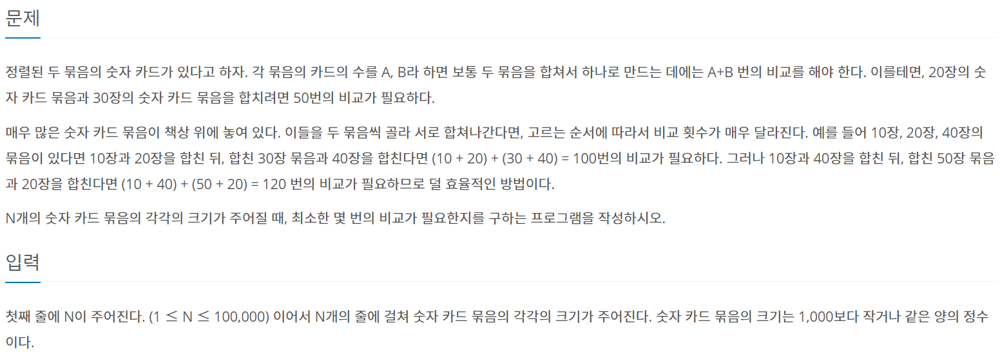
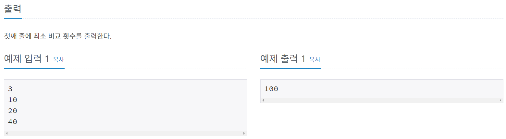
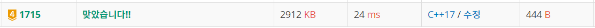

#문제정보
 
#문제분석
C++ STL 라이브러리의 queue를 이용하면 간단하게 해결 가능한 문제이다.
10장 20장 40장 50장 100장 묶음의 카드뭉치가 주어졌다고 가정할때, 무조건 작은 카드들 부터 묶는게 최적의 선택이다.
따라서 priority_queue 컨테이너 어댑터를 이용해서, 작은 카드 뭉치 두개를 임시변수에 저장해 놓은뒤 , 각각 pop 하고 합쳐서 다시 집어넣는 식으로 풀이하였다.
#소스코드
#include <iostream>
#include <queue>
using namespace std;
int N;
int result;
int a,b;
int main()
{
ios::sync_with_stdio(false); cout.tie(0);
priority_queue<int, vector<int>, greater<int>> q;
cin >> N;
for (int i = 0 ; i < N ; ++i)
{
int temp;
cin >> temp;
q.push(temp);
}
while (q.size() > 1)
{
a = q.top(); q.pop();
b = q.top(); q.pop();
result += (a + b);
q.push(a + b);
}
cout << result << "\n";
return 0;
}
1715번: 카드 정렬하기
정렬된 두 묶음의 숫자 카드가 있다고 하자. 각 묶음의 카드의 수를 A, B라 하면 보통 두 묶음을 합쳐서 하나로 만드는 데에는 A+B 번의 비교를 해야 한다. 이를테면, 20장의 숫자 카드 묶음과 30장
www.acmicpc.net